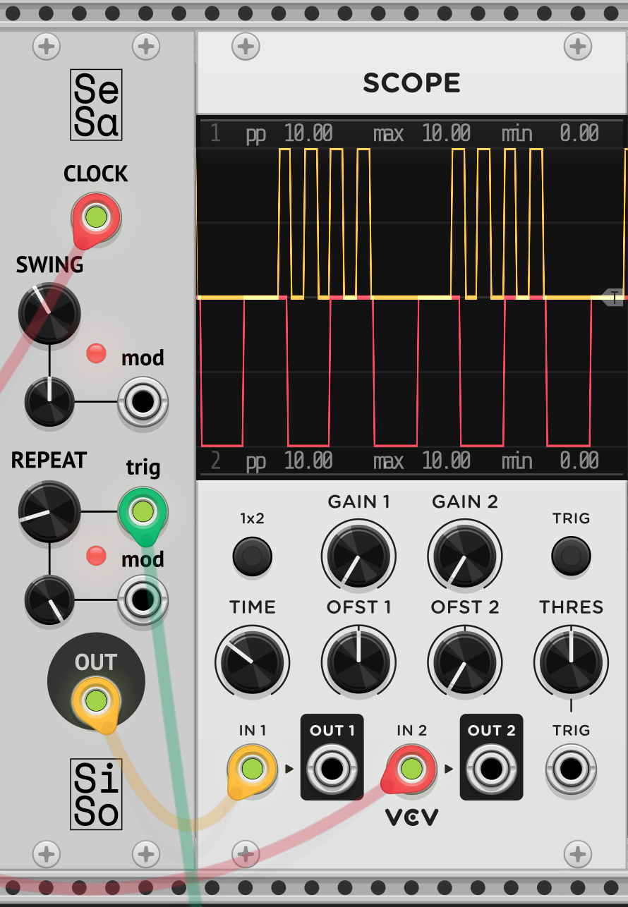

Silly Sound's Sesame
Table of contents
Feel free to check out this and other Silly Sound modules at the GitHub codebase (they're well commented I swear). All of the code mentioned in this article can be found in src/Sesame.cpp
Background
There are multiple this to explain here before going into the actual project, but if you're familiar with VCV Rack you can probably skip ahead. Otherwise, here is a crash course for Eurorack as I understand it. Synthesizers commonly have multiple parts working in unison including something to make sound (commonly waveforms), something to filter that sound to add some depth, something to keep track of time and possibly sequence notes, and many, many more. All of these tools are implicitly part of the synthesizer though, which allow different parameters to be altered but always function and communicate in specific ways. Somewhere in the 50s to 60s someone moved towards making a more "modular" system, something that can have standard voltage inputs and outputs for each part of the synthesizer so you can customize exactly how different components communicate and are controlled. This has spiralled since then, and dawned the birth of Eurorack in the 90s.
Eurorack takes modular synthesizers one step further, and breaks components down into their own panels. Now users can pick and choose which modules they want to use in their setup, and since things are standardized, they can really combine any module from any manufacturer. This birthed a lot of really interesting sounds and equally confusing and expensive setups, which I am both excited and fearful to invest in. Thankfully, there are less costly options to play with modular synthesis, one of those being virtual synthesizers. There are many types of virtual synthesizers, but the one I'm focussing on today is VCV Rack. This open-source beauty is free to use and also has massive developer support, allowing anyone to create virtual modules and submit them to be on the official module library. I am heavily invested in audio programming right now, and as someone with minimal signal processing experience, I thought this would be a great place to start.
Also if you are wondering, Silly Sounds is a mock Eurorack module company that these plugins will be published under. The company has and will never have profits, but is also a fake company, so we are planned to meet our goals year over year.
What is it
Sesame is a VCV Rack module which takes a standard clock signal as input and modulates it by adding swing and burstfire to the original signal. The swing moves pairs of beats closer together to take away some of the robotic accuracy of the clock and move it towards a jazzier space. The higher the swing, the closer and faster the beats in the pair are, and the farther apart the pairs are from one another.
The repeater, or burstfire, or whatever you would like to call it, essentially divides a single clock high into multiple smaller high signal. The repeater can be actuated on a beat-by-beat basis, and the number of beats the original beat is divided into can be moved from 1 to 8 times (8 is not some technological limit, I just think things get muddy and messy past that and don't see a use case). Both the amount of swing and number of beats the repeater puts out can be modulated automatically with an input signal, allowing these parameters to organically grow and shrink given any range of input.
 Sesame module plugged into a scope, showing clock input on the bottom and modulated output on the top
How each part works
Sesame is a three-parter in terms of code chunks. The first thing both the swing and repeat portions need is a measure of the current tempo. To do this, I have a timer tracking the time between rises from the clock signal, and I keep the latest gap between signals as the clock period. Every sample period (how often the module process is called, commonly around the 40Hz mark), a Schmitt Trigger processes the current clock input to check for a clock rise. If there is a rise, we record the period and restart the timer. Otherwise, we just continue.
// Schmitt trigger initialization
rack::dsp::SchmittTrigger clockTrigger;
...
// Get the current time from the timer
currentTime = clockTimer.getTime();
// Check if we are on a clock rise (voltage jump from 0 -> 10)
if (clockTrigger.process(inputs[CLOCK_INPUT].getVoltage()))
{
// Set the current clock period to the current timer time, and reset the timer
originalPeriod = currentTime;
clockTimer.reset();
// Reset the current time
currentTime = 0;
}
The swing and repeater pieces were coded in separate modules before being combined into Sesame. Because of this, and because it's easier to explain and conceptualize, I'll lay them out first independently. The swing portion looks at the clock signal as pairs of beats, keeping track of which beat is the first and which one is the second. As swing increases in a range from 0-1, we wait longer for the first beat to play, and we end the second beat sooner. The second beat always starts at the same time as the original clock signal.
moddedHigh = clockHigh * (1 - swing);
// First beat, play when current time is past the adjusted start time
// and just play for the adjusted clock high time
if (firstBeat)
{
if (currentTime >= originalPeriod * swing &&
currentTime <= (originalPeriod * swing) + moddedHigh)
{
outValue = 10;
}
else
{
outValue = 0;
}
}
// Second beat, play until current time is more than the adjusted clock high
else
if (currentTime > moddedHigh)
{
outValue = 0;
}
else
{
outValue = 10;
}
The repeater portion is a little cleaner, tucked away in a formula applied to the current time and clock period. As seen in the image above, the standard clock signal has a high for exactly the first half of its period, and a low for the second half. Since we're going to be dividing this up into n equal segments, we can just make an equation to take the clock period and n and output the n highs spaced equally across the original period. When n is 1, this would be the exact same as the input signal, but as n rises, the number of clock highs rises proportionately and those clock highs get smaller and smaller, since they still need to fit in the same original period.
// Make sure the repeater mod is triggered and we have a valid clock period (>0)
if (modOn && clockPeriod)
{
// This outputs to 10 unless we are in the second half of a clock signal, which will make it output 0
outValue = (10 - (int((currentTime * n * 2) / clkPeriod) % 2) * 10);
// Turn off mod if it has passed the initial period, avoid constant repeating when original signal stops
if (currentTime >= originalPeriod)
{
modOn = false;
}
}
else
{
// Send original signal as the passthrough, avoid needless calculations
outValue = inValue;
}
How they work together
So the main part of this project was combining these basic modules under one control scheme. The problem that arises is the swing module is set to output the specific highs and lows of the clock w.r.t the current swing value, whereas the repeater module is set to output all highs and lows in a given period w.r.t the current repeating frequency n. Because of this, we can't just move the equation from the repeater module into the outValue outputs of the swing module and call it a day. What we can do, however, is shift our view of swing from delaying beats and reducing the high and low times to pairs of beats in their own, much faster frequency. Looking at the problem from this angle allows us to easily calculate a new modded period length, which we can then use the repeater function on. All we need to do then is just make sure the first beat waits the appropriate time before playing, and only two beats are played from this new timing.
// Calculate the modded period
moddedPeriod = originalPeriod * (1 - swing);
if (isFirstBeat)
{
// Wait until the current time reaches the start of the modded period time
if (currentTime >= clockPeriod - moddedPeriod)
{
/*
This output is set to 10 for half of the mod period, and 0 for the second
half, as regular clock signals would be. However, this is done through
some repeater math as well. Essentially, for n repeats, we are dividing the
period into n groups, each group having the first half high (10) and the
second half low (0). If there is no repeater trigger, n
is set to 1 to mimic just a single beat
Also note the time calculation at the start, allowing the equation to mimic
starting at t=0, rather than t=(clockPeriod - moddedPeriod)
*/
outValue = (10 - (int(((currentTime - (clockPeriod - moddedPeriod)) * n * 2) / moddedPeriod) % 2) * 10);
}
}
// If we're on the second beat, we want to play until we reach the end of the modded
// period time, always starting at the rise of the original second beat
else if (clkCurrent <= modPeriod)
{
// Same math, don't need the clock calculation though since we start at the same
// time as the original second beat, so t=0
outValue = (10 - (int((currentTime * n * 2) / moddedPeriod) % 2) * 10);
}
Conclusion and considerations
This basic clock module was a great dive-in to VCV Rack's development space, and into some signal processing itself. The next step to take ideally would be to start dealing with actual sound waves, which I aim to do through the use of a live feed-through sampler and repeater.
In terms of upgrades, a delay could always be added on to this module as well, and I found in use that a button to flip which beats are viewed as first and second could be helpful in properly synchronizing the swing to your current beat. Since this isn't in VCV Rack currently, it'll still be considered under development and I may add them before submitting, but we'll see. For now, you can always clone the Silly Sounds repo and build the plugin locally to access it on your local VCV Rack setup using this handy guide.